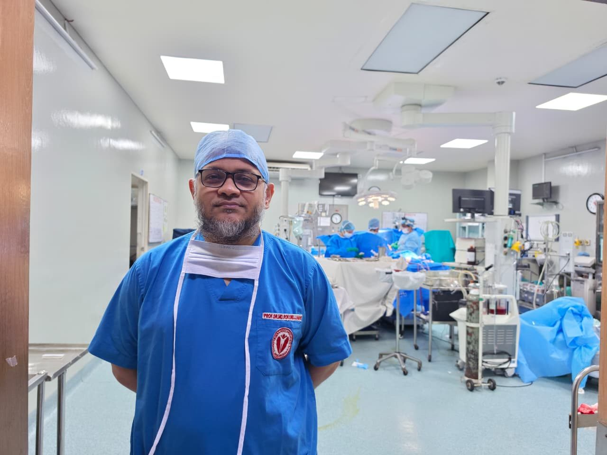

Accepting new patients
Bangladesh's 1st MICS VSD Closure
Minimally Invasive Cardiac Surgery By Prof. Dr. Md. Rokonujjaman (Selim)
Professor & Senior Consultant Cardiac Surgeon at Ibrahim Cardiac Hospital & Research Institute — pioneer of MICS VSD closure in Bangladesh. Precise, minimally invasive, patient-safety first.
MICS
VSD Closure — 1st in Bangladesh
FACS
Fellow, American College of Surgeons (USA)
3
International fellowships (Korea • Malaysia • India)

